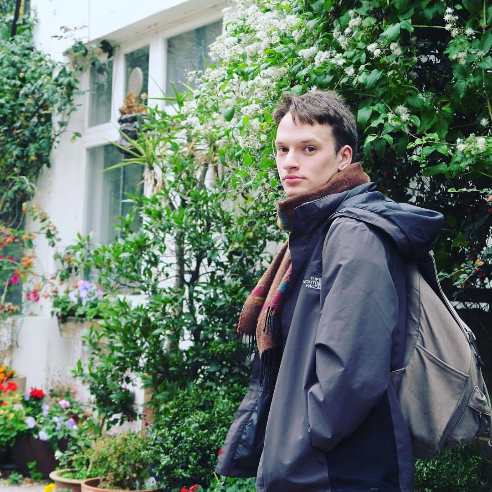

Ridley Soudack
My name is Ridley Soudack. I make maps that tell stories and breathe life into geospatial data. I have experience working with the suite of ESRI products, a number of relational database management systems, Python, and SQL.
Looking to draw more out of your data? Let me get you there.

Work Experience
Project Manager - Human Contact
- Experience managing teams and projects for a rapidly-growing creative and events agency, working with clients such as Shoppers Drug Mart, Home Hardware, and Japan Tobacco International
- Tradeshow manager for corporate conferences, responsible for sponsorship campaigns totalling over $900,000 in sponsor commitment
- Confident working as primary project manager for creative projects, communicating with clients and managing project quoting and invoicing
- Technical experience performing Google Analytics data analysis across a range of client platforms
Education
-
GIS Applications Specialist (Ongoing)Fleming College, ON
-
Bachelor of Arts - SociologyDurham University, UK